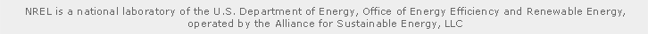

<!DOCTYPE HTML PUBLIC "-//W3C//DTD HTML 4.01 Transitional//EN">
<!-- The HTML 4.01 Transitional DOCTYPE declaration-->
<!-- above set at the top of the file will set     -->
<!-- the browser's rendering engine into           -->
<!-- "Quirks Mode". Replacing this declaration     -->
<!-- with a "Standards Mode" doctype is supported, -->
<!-- but may lead to some differences in layout.   -->

<html>
	<head>
		<meta http-equiv="content-type" content="text/html; charset=UTF-8">

		<!--                                                               -->
		<!-- Consider inlining CSS to reduce the number of requested files -->
		<!--                                                               -->
		<link type="text/css" rel="stylesheet" href="Tracker.css">

		<!--                                           -->
		<!-- Any title is fine                         -->
		<title>Algae Sample Tracker</title>    

		<!--                                           -->
		<!-- This script loads your compiled module.   -->
		<!-- If you add any GWT meta tags, they must   -->
		<!-- be added before this line.                -->
		<!--                                           -->
		<script type="text/javascript" language="javascript"
			src="tracker/tracker.nocache.js"></script>
	</head>

	<!--                                           -->
	<!-- The body can have arbitrary html, or      -->
	<!-- you can leave the body empty if you want  -->
	<!-- to create a completely dynamic UI.        -->
	<!--                                           -->
	<body>

		<!-- OPTIONAL: include this if you want history support -->
		<iframe src="javascript:''" id="__gwt_historyFrame"
			style="position: absolute; width: 0; height: 0; border: 0"></iframe>

		<table align="center">
			<tr>
				<td id="titleContainer"></td>
				<td id="sampleContainer"></td>
			</tr>
		</table>

		<div id="footer">
			<div align="center">
				
			</div>
			<map name="footer_map" id="footer_map">

				<area shape="rect" coords="27,7,61,20" href="http://www.nrel.gov/"
					alt="NREL" />
				<area shape="rect" coords="238,7,399,19"
					href="http://www.energy.gov/" alt="U.S. Department of Energy" />
				<area shape="rect" coords="405,7,697,21"
					href="http://www.eere.energy.gov/"
					alt="Office of Energy Efficiency and Renewable Energy" />
				<area shape="rect" coords="307,21,524,35"
					href="http://www.allianceforsustainableenergy.org/"
					alt="Alliance for Sustainable Energy, LLC" />

			</map>

			<p align="center">
				<a href="mailto:David.Crocker@nrel.gov">Need Help?</a>&nbsp;&nbsp;|&nbsp;&nbsp;
				<a href="http://www.nrel.gov/security.html">Security &amp;
					Privacy</a>&nbsp;&nbsp;|&nbsp;&nbsp;
				<a href="http://www.nrel.gov/disclaimer.html">Disclaimer</a>&nbsp;&nbsp;|&nbsp;&nbsp;
				<a href="https://nbc.nrel.gov/wiki/GuideSample" target="_blank">User Guide</a>
			</p>
		</div>
	</body>
</html>
